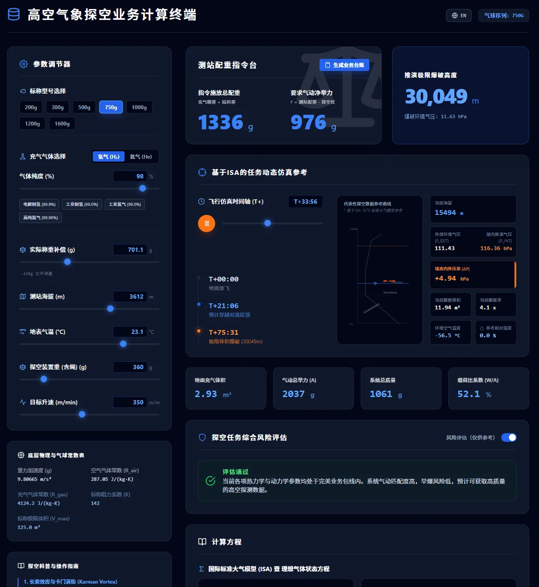

输入Inputs
气球标称克重、实际克重补偿、载荷、目标升速、气体类型和纯度，以及测站温度与气压。支持滑块与键盘输入。Balloon mass and mass compensation, payload, target ascent rate, gas type and purity, station temperature and pressure. Sliders and keyboard entry are supported.

网页应用Web application
在浏览器中估算气球充气体积、净举力、升速和爆炸高度。支持实时参数调整与中英文界面。Estimate balloon fill volume, net lift, ascent rate and burst altitude in the browser, with live inputs and Chinese and English interfaces.
工具内嵌 ISA 对流层和平流层模型，使用达因公式（按业务标定，二分法求解）、理想气体方程与气体比举力估算充气和上升参数。The tool combines ISA tropospheric and stratospheric models, the operationally calibrated Dines formula solved by bisection, the ideal gas law and gas buoyancy to estimate inflation and ascent parameters.
参考资料包括《常规高空气象观测业务规范》、WMO CIMO 指南和气球制造数据。ISA 是标准大气，不是现场实测大气；结果用于估算，不能代替业务规范和放飞安全判断。References include operational upper-air observation specifications, the WMO CIMO Guide and balloon manufacturer data. ISA is a standard atmosphere, not a measurement of current conditions. Estimates do not replace operational procedures or launch-safety decisions.
气球标称克重、实际克重补偿、载荷、目标升速、气体类型和纯度，以及测站温度与气压。支持滑块与键盘输入。Balloon mass and mass compensation, payload, target ascent rate, gas type and purity, station temperature and pressure. Sliders and keyboard entry are supported.
估算地面充气体积、净举力、内外压差、温压密度，以及对流层顶和爆炸高度。SVG 图形显示放飞和上升节点。Estimates fill volume, net lift, pressure difference, temperature, pressure, density, tropopause and burst altitude. SVG graphics show launch and ascent stages.
提供膨胀余量、低温脆性、涡街、积冰和纯度相关的基础提示，可关闭。可生成 ASCII 操作台账。Optional basic checks cover expansion margin, cold brittleness, vortex shedding, icing and gas purity. An ASCII operation log can be generated.
React 与 Tailwind 构建的纯前端响应式应用，支持中英文。状态钩子绑定参数、缓存钩子封装计算。动画和时间估计仍有已知误差。A responsive front-end application built with React and Tailwind, with Chinese and English interfaces. State hooks bind inputs and memoization wraps calculations. Animation and timing estimates still have known inaccuracies.